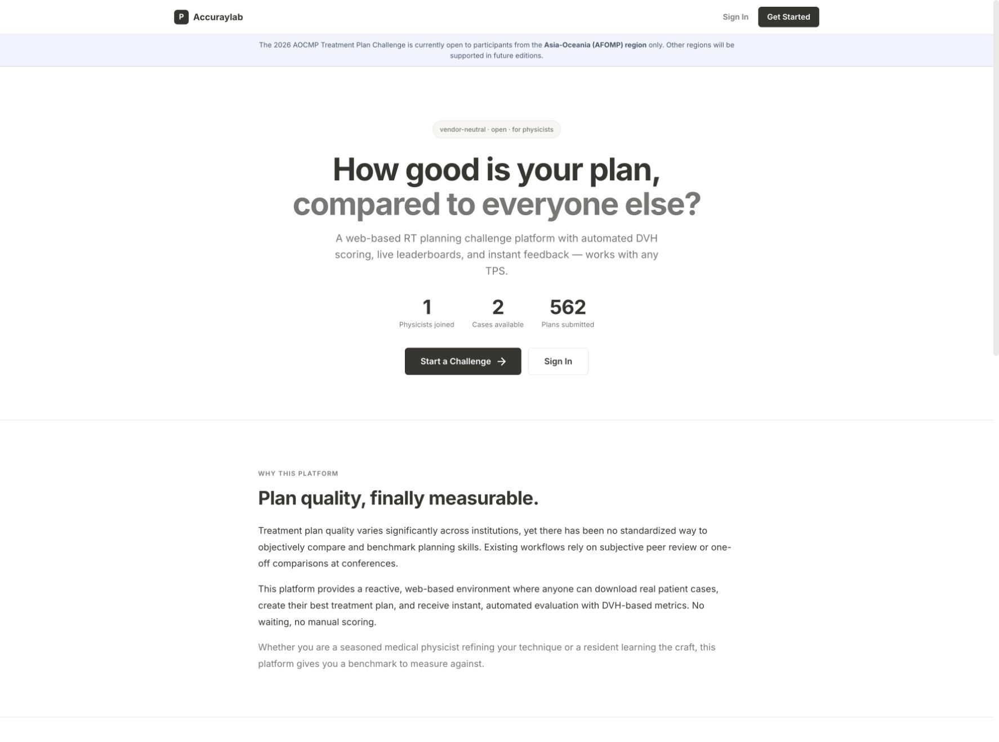

How a physicist uses it
- Join a challenge.Sign in and choose a released case with its prescription, structures, and scoring rules.
- Download the case.Receive CT and structure DICOM objects for planning in the participant’s own treatment-planning system.
- Create the best plan.Use Eclipse, Precision, Monaco, RayStation, or another TPS; the platform does not prescribe the optimizer.
- Upload RT Dose.Submit the resulting DICOM dose object while the service checks its relationship to the challenge case.
- Compare the result.Review DVHs, conformity, homogeneity, OAR metrics, isodose visualization, and live leaderboard position.
What I finished
The deployed system combines a React interface, FastAPI backend, PostgreSQL records, MinIO object storage, Redis/Celery evaluation jobs, Google login, interactive CT/structure/dose review, automated scoring, submissions, administration, and a real-time leaderboard. The private production repository is planchallengerepo. At the time of this portfolio capture, the live landing page reported two cases and 562 submitted plans.
562plans shown on the live service
2challenge cases shown
Any TPSvendor-neutral submission
The important boundary
This is an educational and benchmarking platform. Its scores compare submitted plans under challenge rules; they do not approve a clinical plan, verify treatment delivery, replace patient-specific QA, or establish that the highest-ranked plan is appropriate for an actual patient.
← All projects